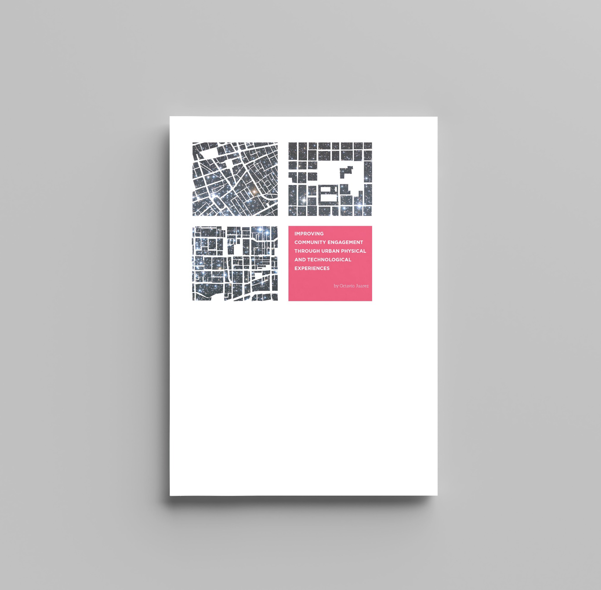
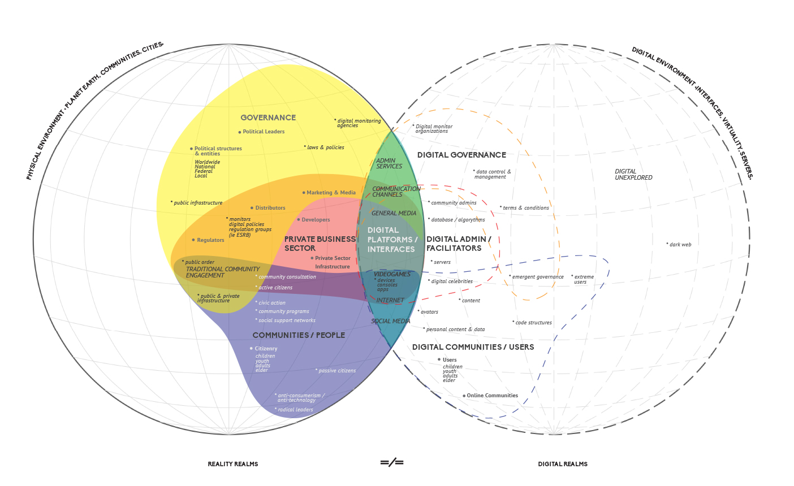
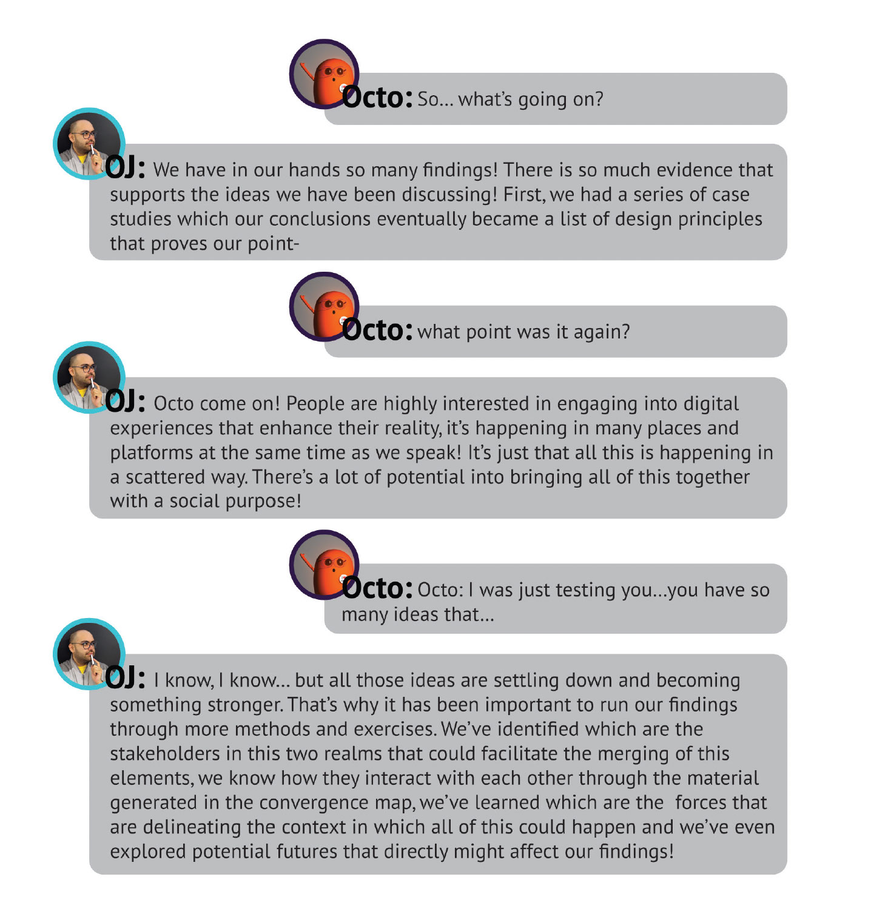
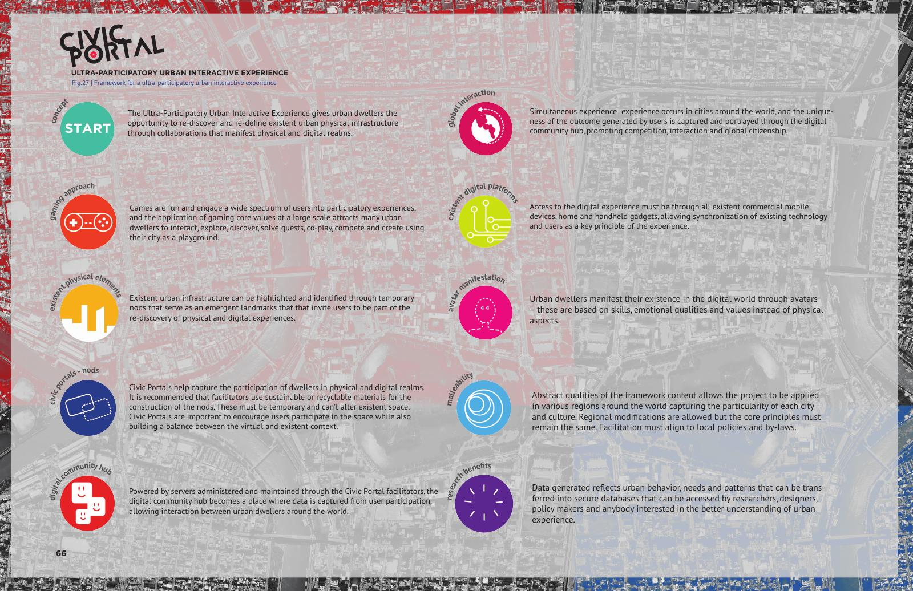
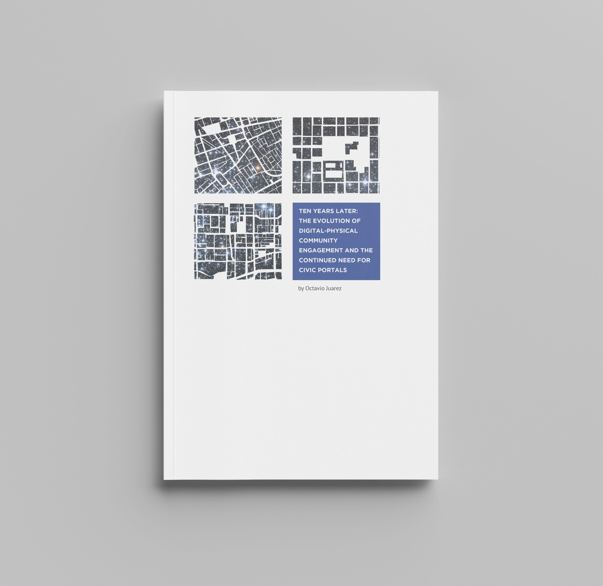

The original research
I began this research as part of my Master of Design in Strategic Foresight and Innovation at OCAD University. I wanted to see how the participatory qualities of digital games might inform the design of public spaces, especially when combined with temporary architecture and familiar urban infrastructure.
Read the 2015 research paper (PDF)
A framework for comparing games and public spaces
I adapted Lars Konzack’s computer game analysis method into the Virtual–Physical Analysis Framework. His distinction between the virtual space and the playground gave me a way to examine both the interface and the setting around it. I looked at what people could do, how they interacted, and how the setting shaped their experience.
The framework gave me a common way to compare examples as different as PARK(ing) Day, the Kumbh Mela, Janet Echelman’s urban installations, and digital games. The comparisons informed design principles for temporary architecture, participatory interfaces, and urban planning.
Mapping influence across physical and digital spaces
I used a convergence map to compare how public institutions, private platforms, and communities shape access and participation. Public institutions have a strong role in regulating physical space, while platform operators and users have more influence in many digital settings. The map locates digital platforms and interfaces where these relationships overlap.
Hover to magnify. On touchscreens, turn on the magnifier and tap an area. With a keyboard, turn it on, focus the map, and use the arrow keys. Press Escape to close it.

Exploring possible futures
I used trends, drivers, and emerging signals to explore how the relationships in the map could change. Drawing on Jim Dator’s futures framework, I developed a growth scenario in which technology became more accessible and more oriented toward social participation. This gave me a setting in which to explore how Civic Portals might work.
Dialogues with Octo
I used an imagined exchange with a research avatar, Octo, to question my assumptions and connect the case studies, stakeholder mapping, and possible futures.

Read transcript
Octo: So... what’s going on?
OJ: We have in our hands so many findings! There is so much evidence that supports the ideas we have been discussing! First, we had a series of case studies which our conclusions eventually became a list of design principles that proves our point-
Octo: what point was it again?
OJ: Octo come on! People are highly interested in engaging into digital experiences that enhance their reality, it’s happening in many places and platforms at the same time as we speak! It’s just that all this is happening in a scattered way. There’s a lot of potential into bringing all of this together with a social purpose!
Octo: I was just testing you...you have so many ideas that...
OJ: I know, I know... but all those ideas are settling down and becoming something stronger. That’s why it has been important to run our findings through more methods and exercises. We’ve identified which are the stakeholders in this two realms that could facilitate the merging of this elements, we know how they interact with each other through the material generated in the convergence map, we’ve learned which are the forces that are delineating the context in which all of this could happen and we’ve even explored potential futures that directly might affect our findings!
What a Civic Portal could look like
A Civic Portal could be a temporary installation in an existing park or plaza, linked to a digital community hub that people could access from their own devices. The installation would invite people to rediscover a familiar place and participate in a shared experience. The framework called for temporary structures that left the site intact and could be adapted to local culture and policies.
I used a speculative gameplay brief to illustrate how participation might unfold and a radar exercise to identify risks and assess how the concept might perform.

2025 Research Update
Ten Years Later · Revisiting Civic Portals
In March 2025, I revisited the Civic Portals framework through a decade of experiments in urban play, participatory planning, and digital public services. I wanted to understand what happens after a digital experience draws people in. Who can take part, what can they influence, and what gives them a reason to stay involved?
In the addendum, I looked at how Pokémon GO drew people into parks and plazas, and how UN-Habitat’s Block by Block initiative used Minecraft to help residents share design proposals with planners. I also considered the questions Toronto’s proposed Quayside development raised about public trust, data privacy, and who makes decisions about technology in shared spaces.
The comparison changed how I would design a Civic Portal today. A temporary installation could still invite people to rediscover a familiar place, and a digital platform could extend participation beyond a single event. The design would also need a way to participate in person, a clear explanation of how information would be used, and a way for residents to see what happened to their contributions.
Read the 2025 addendum (PDF)
Project Credits
My contribution
I developed the research framework, analyzed case studies, mapped stakeholder relationships, explored future scenarios, and developed the Civic Portals concept. I authored the original research paper and the 2025 addendum.
Program
OCAD University, Master of Design in Strategic Foresight and Innovation, 2015.